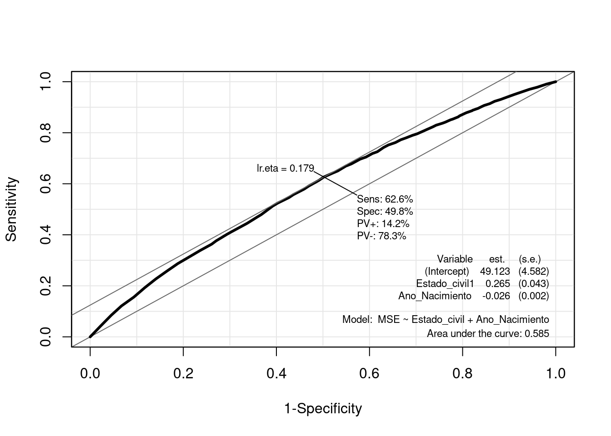

# Librerias
library(readxl) # Para leer los excelsRegresión Logística: ECV_microdatos
Introducción
dataset
En este cuaderno vamos a analizar la existencia del llamado “ascensor social” en España a partir de los microdatos de la Encuesta de Condiciones de Vida (ECV) del año 2019. Dicho análisis nos sirve como excusa para tratar de mostrar en qué consiste una regresión logística y cómo llevarla a cabo en R.
En primer lugar, debemos definir qué es eso del “ascensor social” y cómo vamos a tratar de analizarlo nosostros. Éste se define como la posibilidad de ascender o descender de clase social. Aunque podemos considerar que la pertenencia a una determinada clase social - si es que éstas existen de forma estanca y perfectamente distinguible - se explica por una combinación de aspectos: nivel económico, cultural, de estudios, etc, nosotros nos vamos a centrar simplemente en el nivel económico.
Ver fichero Dataset_cleaning.rmd para ver cómo se han tratado dichos microdatos hasta obtener un conjunto de datos adecuado para la regresión logística, y que tomaremos aquí como punto de partida.
Cargamos entonces el conjunto de datos:
datos1 <- read_excel("../../../files/ECV.xlsx", sheet = "Datos")Concretamente tenemos las siguientes variables:
- MSE (Mejora Situación Económica): Variable binaria, 1= ha mejorado la calidad de vida del encuesado respecto a su infancia, 0=no ha mejorado. teniendo en cuenta las nueve dimensiones.
- Factor_de_elevacion : Factor de elevación para cada observación respecto a la población total.
- Estado_civil : Estado civil del encuestado. 0=No casado, 1=Casado
- Nivel_Estudios : Nivel estudios del encuestado. 0=Nivel bajo, 1=Nivel superior
- Ano_Nacimiento : Año de nacimiento del encuestado.
Descripción del trabajo a realizar
(Esto irá en la web de explica) Se pretende hacer una regresión logística que clasifique la variable respuesta MSE - Mejora de la Situación Ecnonómica del encuestado respecto a su adolescencia en casa- en función de varios predictores, tanto continuos (Ano_Nacimiento) como categóricos (Estado_civil, Nivel_Estudios).
- Hacer un análisis exploratorio.
- IMPORTANTE: Convertir a factor las variables que lo sean.
- Plantear diversos modelos según variables incluidas.
- Compararlos con ANOVA y ROC CURVE.
- Para el modelo seleccionado, explicar los coeficientes, odds ratio,…
Análisis Exploratorio (EDA1)
Lo primero de todo vamos a cargar las librearias necesarias para ejecutar el resto del código del trabajo:
library(dplyr) # Para tratamiento de dataframes
library(ggplot2) # Nice plotsClasificación: Regresión Logística
Introducción
Un análisis de regresión logística es una técnica estadística multivariante que tiene como finalidad pronosticar o explicar los valores de una variable dependiente categórica a partir de una (regresión logística simple) o más (regresión logística múltiple) variables independientes categóricas o continuas. Dichas variables independientes reciben el nombre de covariables. Asimismo, a diferencia de lo que suele hacerse cuando tenemos una variable dependiente continua, cuando ésta es categórica, no interesa describir o pronosticar los valores concretos de dicha variable, sino la probabilidad de pertenecer a cada una de las categorías de la misma.
Aunque matemáticamente se pueda ajustar un modelo de regresión lineal clásico a la relación entre una variable dependiente categórica y una o varias covariables, cuando la variable dependiente es dicotómica (regresión logística binaria, caso más sencillo de regresión logística) no es apropiado utilizar un modelo de regresión lineal porque una variable dicotómica no se ajusta a una distribución normal, sino a una binomial. Ignorar esta cuestión podría llevar a obtener probabilidades imposibles: menores que cero o mayores que uno.
Para evitar este problema, es preferible utilizar funciones que realicen predicciones comprendidas entre un máximo y un mínimo. Una de estas funciones - posiblemente la más empleada - es la curva logística o función sigmoide:
\[\begin{align} \eta=\log \left(\frac{p}{1-p}\right)= \beta_0 + \beta_1 X_1 + \beta_2 X_2 + \ldots , \quad \text{with } \quad p=P(Y=1) \end{align}\]
Es decir, estamos estimando con una regresión lineal el valor de \(\eta\), que sí es una v.a. continua - a diferencia de Y que es binaria-.
Esto es, \(p=\frac{e^\eta}{1+e^\eta}=\frac{1}{1+e^{-\eta}}\). De esta forma, para valores positivos muy grandes de \(\eta\) llamado odds, \(e^{\eta}\) es aproximadamente cero, por lo que el valor de la función es 1; mientras que para valores negativos muy grandes de \(\eta\), \(e^{-\eta}\) tiende a infinito, haciendo que el valor de la función sea 0.
A continuación, para simplificar un poco las cosas, consideremos el modelo de regresión logística más sencillo: regresión logística binaria simple (una sola covariable):
\[ \begin{align} P(Y=1)=\frac{1}{1+e^{-(\beta_0 + \beta_1X_1 + ϵ)}} \end{align} \]
La interpretación de esta función es muy similar a la de una regresión lineal: el coeficiente \(\beta_0\) representa la posición de la curva sobre el eje horizontal o de abscisas (más hacia la izquierda o más hacia la derecha); mientras que \(\beta_1\) representa la pendiente de la curva, es decir, cuán inclinada está en su parte central (cuanto más inclinada, mayor capacidad de discriminar entre los dos valores de la variable dependiente).
Esta imagen, sacada del libro Análisis de datos en Ciencias Sociales y de la Salud III (Pardo et al., 2012) muestra tres regresiones logísticas con el mismo coeficiente , pero distinto poder discriminante (diferente ): la curva de la izquierda tendría un poder de discriminación perfecto, mientras que la de la derecha no discrimina nada (la del medio sería un caso intermedio entre los dos extremos). Por lo tanto, podemos decir que una covariable será mejor predictora cuanto mayor sea el coeficiente \(\beta\) que genere. [Aclaración: en la imagen, \(\pi_1 = P(Y=1)\)]
Si estuviésemos ante una regresión logística múltiple, cada variable independiente recibiría una ponderación proporcional a su capacidad para predecir Y.
Bondad de Ajuste e Interpretación Modelo
Interpretación Modelo
Recordar que el modelo tomaba la forma \[\eta=\log \left(\frac{p}{1-p}\right)= \beta_0 + \beta_1 X_1 + \beta_2 X_2 + \ldots , \quad \text{with } \quad p=P(Y=1)\], es decir, estamos estimando el log(odds). Esto nos lleva a las siguientes apreciaciones:
Aunque tanto \(P(Y=1)\), como \(Odds(Y=1)\), como \(\operatorname{logit}(Y=1)\) expresan la misma idea, están en distinta escala:
- La probabilidad toma valores comprendidos entre 0 y 1.
- La odds tiene un valor mínimo de cero y no tiene máximo.
- La logit o log(odds) no tiene ni mínimo ni máximo.
Por ejemplo, a una probabilidad de 0,5, le corresponde una odds de 1 y un logit de 0. Ahora bien, es cierto que razonar en términos de cambios en los logaritmos resulta poco intuitivo. Por ello, es preferible interpretar el cambio en las odds o en la razón de ventajas (también llamada odds ratio, razón de probabilidades o razón de momios).
La interpretación más frecuente es interpretar los signos de los coeficientes del modelo, es decir, los signos de \(\beta_1, \ldots , \beta_k\).
Si \(\beta_i >0\) , se traduce en que un aumento de una unidad en la variable \(x_i\) -si es continua- o un cambio de categoría -si \(x_i\) es categórica- se traduce en un aumento de \(\beta_i\) unidades el valor de logit. Es decir, la probabilidad \(p\) (que Y=1) aumenta, en función de \[p=\frac{e^\eta}{1+e^\eta}\].
- Si \(\beta_i <0\) , se traduce en que un aumento de una unidad en la variable \(x_i\) -si es continua- o un cambio de categoría -si \(x_i\) es categórica- se traduce en una disminución de \(\beta_i\) unidades el valor de logit. Es decir, la probabilidad \(p\) (que Y=1) disminuye, en función de \[p=\frac{e^\eta}{1+e^\eta}\].
Una pregunta importante en cualquier análisis de regresión es si el modelo propuesto se ajusta adecuadamente a los datos, lo que conduce naturalmente a la noción de una prueba formal para la falta de ajuste (o bondad de ajuste).
Medidas Especifidad y Sensibilidad
La especificidad y la sensibilidad son medidas utilizadas para evaluar el rendimiento de un modelo predictivo, especialmente en problemas de clasificación binaria (donde solo hay dos clases). Las definimos como:
- Sensibilidad (Sensitivity): Es la proporción de verdaderos positivos (casos positivos correctamente identificados) respecto al total de casos positivos reales. Es la capacidad del modelo para identificar correctamente los casos positivos.
- Especificidad (Specificity): Es la proporción de verdaderos negativos (casos negativos correctamente identificados) respecto al total de casos negativos reales. Representa la capacidad del modelo para identificar correctamente los casos negativos.
Un equilibrio entre ambas es deseable, pero depende del contexto específico del problema y de las consecuencias de los falsos positivos y falsos negativos. En el caso, por ejemplo, de detectar si un paciente tiene cáncer o no, parece más razonable centrarse en los Falsos Negativos, ya que un paciente que tiene cáncer no lo estamos detectando, lo que lleva un riesgo ímplicito muy alto.
| Clasificado como Positivo | Clasificado como Negativo | Total | |
|---|---|---|---|
| Realmente Positivo | Verdadero Positivo (VP) | Falso Negativo (FN) | VP + FN |
| Realmente Negativo | Falso Positivo (FP) | Verdadero Negativo (VN) | FP + VN |
| Total | VP + FP | FN + VN |
Sensibilidad ( )
Especificidad: ( )
Curva ROC
La curva ROC es una representación gráfica de la sensibilidad frente a la tasa de falsos positivos a varios umbrales de clasificación. Se utiliza comúnmente en análisis de clasificación para evaluar el rendimiento de un modelo.
Para calcular el área bajo la curva ROC (AUC-ROC), se utiliza el área debajo de la curva generada por la representación de la sensibilidad y la tasa de falsos positivos. Cuanto más cerca esté el AUC-ROC de 1, mejor será el rendimiento del modelo, ya que indica una mayor capacidad de distinguir entre clases.
Es una medida de bondad porque evalúa qué tan bien puede discriminar un modelo entre las clases positivas y negativas. Cuanto más se acerque el AUC a 1, mejor será la capacidad del modelo para distinguir entre las clases. Se utiliza para comparar y seleccionar modelos, donde un AUC mayor indica un mejor rendimiento predictivo.
Modelo
Formulación
IMPORTANTE: Convertir a factor las variables que tengan que ser tratadas como tal, de lo contrario R las tratará como numéricas. Además, la variable respuesta debe tener los niveles codificados como \(0\) y \(1\) para poder usar la funcion glm.
datos1$Estado_civil <- as.factor(datos1$Estado_civil)
datos1$Nivel_Estudios <- as.factor(datos1$Nivel_Estudios)
datos1$MSE <- as.factor(datos1$MSE)A continuación presentamos tres posibles modelos y posteriormente elegiremos uno de ellos.
- lmod1 : Queremos clasificar la MSE en función del Año de Nacimiento de la persona (numérica).
- lmod2 : Queremos clasificar la MSE en función del Año de Nacimiento de la persona (numérica) y el Estado_civil (categórica).
- lmod3 : Queremos clasificar la MSE en función del Año de Nacimiento de la persona (numérica), el Estado_civil (categórica) y el Nivel de Estudios (categórica) y .
# lmod1
lmod1 <- glm(formula = MSE ~ Ano_Nacimiento, family = binomial(link = logit), data = datos1)
summary(lmod1)
Call:
glm(formula = MSE ~ Ano_Nacimiento, family = binomial(link = logit),
data = datos1)
Coefficients:
Estimate Std. Error z value Pr(>|z|)
(Intercept) 57.139246 4.361655 13.10 <2e-16 ***
Ano_Nacimiento -0.029717 0.002211 -13.44 <2e-16 ***
---
Signif. codes: 0 '***' 0.001 '**' 0.01 '*' 0.05 '.' 0.1 ' ' 1
(Dispersion parameter for binomial family taken to be 1)
Null deviance: 16535 on 17462 degrees of freedom
Residual deviance: 16348 on 17461 degrees of freedom
AIC: 16352
Number of Fisher Scoring iterations: 4# lmod2
lmod2 <- glm(formula = MSE ~ Ano_Nacimiento + Estado_civil, family = binomial(link = logit), data = datos1)
summary(lmod2)
Call:
glm(formula = MSE ~ Ano_Nacimiento + Estado_civil, family = binomial(link = logit),
data = datos1)
Coefficients:
Estimate Std. Error z value Pr(>|z|)
(Intercept) 49.122827 4.581715 10.721 < 2e-16 ***
Ano_Nacimiento -0.025739 0.002319 -11.101 < 2e-16 ***
Estado_civil1 0.264739 0.043272 6.118 9.48e-10 ***
---
Signif. codes: 0 '***' 0.001 '**' 0.01 '*' 0.05 '.' 0.1 ' ' 1
(Dispersion parameter for binomial family taken to be 1)
Null deviance: 16535 on 17462 degrees of freedom
Residual deviance: 16310 on 17460 degrees of freedom
AIC: 16316
Number of Fisher Scoring iterations: 4# lmod3
lmod3 <- glm(formula = MSE ~ Ano_Nacimiento + Estado_civil + Nivel_Estudios, family = binomial(link = logit), data = datos1)
summary(lmod3)
Call:
glm(formula = MSE ~ Ano_Nacimiento + Estado_civil + Nivel_Estudios,
family = binomial(link = logit), data = datos1)
Coefficients:
Estimate Std. Error z value Pr(>|z|)
(Intercept) 50.045838 4.629712 10.810 < 2e-16 ***
Ano_Nacimiento -0.026218 0.002344 -11.183 < 2e-16 ***
Estado_civil1 0.262245 0.043303 6.056 1.4e-09 ***
Nivel_Estudios1 -0.006125 0.052153 -0.117 0.907
Nivel_Estudios2 0.065640 0.045581 1.440 0.150
---
Signif. codes: 0 '***' 0.001 '**' 0.01 '*' 0.05 '.' 0.1 ' ' 1
(Dispersion parameter for binomial family taken to be 1)
Null deviance: 16535 on 17462 degrees of freedom
Residual deviance: 16307 on 17458 degrees of freedom
AIC: 16317
Number of Fisher Scoring iterations: 4En este caso, el Modelo 2 tiene el AIC más bajo, lo que sugiere que podría ser el mejor ajuste entre los tres modelos. Sin embargo, es importante considerar otros aspectos y realizar pruebas adicionales si es necesario para validar el modelo seleccionado. Por otro lado, en términos de la Deviance podemos ver cosas parecidas. Vemos que al lmod1 si le añadimos la variable Estado_civil, la residual variance disminuye lo que parece indicar que está variable es significante. Sin embargo, cuando le añadimos la variable Nivel_Estudios, la dismunición de la deviance es muy baja por lo que no parece que sea del todo relevante en función del resto de variables.
Para este modelo vamos a calcular la matriz de confusión y el área ROC.
# confusion matrices
predicted2 <- predict(lmod2, data.frame(Ano_Nacimiento = datos1$Ano_Nacimiento, Estado_civil = datos1$Estado_civil, Nivel_Estudios = datos1$Nivel_Estudios), type = "response")
library(caret)
confusionMatrix(data = as.factor(ifelse(predicted2 > 0.179, 1, 0)), reference = datos1$MSE, positive= "1")Confusion Matrix and Statistics
Reference
Prediction 0 1
0 7120 1183
1 7176 1984
Accuracy : 0.5213
95% CI : (0.5139, 0.5288)
No Information Rate : 0.8186
P-Value [Acc > NIR] : 1
Kappa : 0.0717
Mcnemar's Test P-Value : <2e-16
Sensitivity : 0.6265
Specificity : 0.4980
Pos Pred Value : 0.2166
Neg Pred Value : 0.8575
Prevalence : 0.1814
Detection Rate : 0.1136
Detection Prevalence : 0.5245
Balanced Accuracy : 0.5623
'Positive' Class : 1
library(Epi)
# The ROC function
# lmod2
ROC(form = MSE ~ Estado_civil + Ano_Nacimiento, data = datos1, plot = "ROC", lwd = 3, cex = 1.5)
Observamos una Especifidad del 50% y una Sensibilidad del 62%. Esto quiere decir que nuestro modelo es mejor evitando falsos negativos, que falsos positivos Es decir, que es peor evitando que digamos que la calidad de vida de una persona ha mejorado cuando realmente no lo ha hecho, que al revés.
Destacar que el elemtno Ir.eta que aparece arriba, es el punto de corte de la probabilidad. Es decir, si nuestra regresión logística predice que hay una probabilidad mayor de \(0.179\) de que haya mejorado la calidad de vida, nosotros lo clasificamos como que efectivamente ha mejorado y si es menor, lo clasificamos como que no.
Otras consideraciones
Podemos usar el presente modelo para predecir la probabilidad de cesárea en función de las variables predictoras de nuevas observaciones.
Interpretación coeficientes
Vamos a volver a sacar el summary del modelo para proceder a explicar todo bien de nuevo.
summary(lmod2)
Call:
glm(formula = MSE ~ Ano_Nacimiento + Estado_civil, family = binomial(link = logit),
data = datos1)
Coefficients:
Estimate Std. Error z value Pr(>|z|)
(Intercept) 49.122827 4.581715 10.721 < 2e-16 ***
Ano_Nacimiento -0.025739 0.002319 -11.101 < 2e-16 ***
Estado_civil1 0.264739 0.043272 6.118 9.48e-10 ***
---
Signif. codes: 0 '***' 0.001 '**' 0.01 '*' 0.05 '.' 0.1 ' ' 1
(Dispersion parameter for binomial family taken to be 1)
Null deviance: 16535 on 17462 degrees of freedom
Residual deviance: 16310 on 17460 degrees of freedom
AIC: 16316
Number of Fisher Scoring iterations: 4Ano_Nacimiento: Por cada incremento unitario en el año de nacimiento, el logaritmo de odds de éxito en MSE disminuye aproximadamente en 0.026, manteniendo constante el Estado Civil.
Estado_civil1: Cuando el estado civil cambia de 0 (soltero) a 1 (casado), el logaritmo de odds de éxito en MSE aumenta aproximadamente en 0.265, manteniendo constante el año de nacimiento.
Interpretación coeficiente Año Nacimiento
El rango del año de nacimiento abarca desde 1960 hasta 1993. La disminución en el logaritmo de odds de éxito en la mejora de la situación económica por cada año de aumento en el año de nacimiento, implica una disminución en la probabilidad de asociar esa persona a una mejroa de la calidad de vida. Esto puede asociarse con el contexto histórico y socioeconómico de esas generaciones.
Las personas nacidas en la década de 1960 provienen de un contexto en el que sus padres experimentaron condiciones económicas precarias, con la transición al estado de bienestar en esa época. A medida que avanzaron en su vida adulta, se beneficiaron considerablemente de ese cambio y disfrutaron de una mejor calidad de vida en comparación con su infancia.
Sin embargo, para las generaciones más recientes, nacidas en los años 80 y 90, ya crecieron en un entorno más establecido de bienestar. Es probable que no hayan experimentado cambios tan significativos en su calidad de vida a medida que envejecían. De hecho, es posible que en los últimos años, hayan presenciado un deterioro en las condiciones económicas, lo que explicaría la tendencia a una disminución en el logaritmo de odds de éxito en la mejora de la situación económica.
Interpretación coeficiente Estado Civil
El coeficiente positivo para el estado civil, donde 0 representa soltero y 1 casado, sugiere que las personas casadas tienen una tendencia más positiva hacia la mejora de su situación económica en comparación con las personas solteras. Esto puede deberse a varios factores.
En contextos culturales y económicos, las personas casadas pueden tener una mayor estabilidad financiera y apoyo mutuo, lo que les permite tener un respaldo emocional y económico más sólido para enfrentar desafíos financieros. Además, el matrimonio suele implicar compartir responsabilidades financieras y planificación conjunta, lo que puede conducir a decisiones más estables y a largo plazo en términos económicos.
No obstante, esto es algo muy generalizado que puede que no sea así ya que la situación económica depende de muchos factores.
Odds Ratio
library("MASS")
lda.class.Iris <- lda(MSE ~ Ano_Nacimiento, datos1)
library("klaR")
partimat(MSE ~ Ano_Nacimiento + Factor_de_elevacion, datos1, method = "lda")
datos1 %>% ggplot(aes(x = Ano_Nacimiento)) +
geom_density(
aes(
group = MSE,
colour = MSE,
fill = MSE
),
alpha = 0.2
)
datos1 <- na.omit(datos1)
datos1 %>% ggplot(aes(x = Ano_Nacimiento)) +
geom_density(
aes(
group = MSE,
colour = MSE,
fill = MSE
),
alpha = 0.2
)
Conclusiones
Este modelo de regresión logística parece haber pasado todos los supuestos de dicha regresión, no obstante, su tasa de acierto no es excesivamente alta. Dado que la variable respuesta es binaria y el acierto no es muy alto, “a ojo” sería bastante factible clasificar.
Footnotes
EDA viene del Inglés Exploratory Data Analysis y son los pasos relativos en los que se exploran las variables para tener una idea de que forma toma el dataset.↩︎